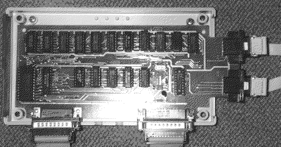

Previous
Next
TOC
Festplatten Fehlercode:
Ersetzte das Testkit durch eine SH204 oder SH205 Festplatte.
ACHTUNG: Es werden Schreibzugriffe auf die angeschlossene Festplatte
durchgeführt, die den Datenbestand beschädigen können. Also
VORHER den Datenbestand sichern!
Controller not responding = Keine Festplatte erkannt oder angeschlossen
Operation timed-out =Festplatte bestätigt nicht das vom Computer ge-
schickte Kommando
Command error = Festplatte führt das Kommando aus, aber es trat bei
ausführung ein Fehler auf
DMA count error = In der MCU stimmt der Datenbytezähler nicht mit der
Summe der übertragenen Bytes überein
Data compare error = Daten sind beim Schreiben und Lesen nicht iden-
tisch, ersetze Glue,
Memory Controller, DMA controller
DMA und Printer/Joystickport:
Können so nicht getestest werden, dafür wird eine zusätzliche Platine
benötigt. Allerdings können die Maustasten und der Joystick betätigt
werden, es erscheinen dann die Punkte nicht als Defekt. Beim DMA Test
niemals eine Festplatte einschalten!
Wenn der DMA Test benutzt wird, müßte normalerweise nur die Meldung
D0 DMA time out kommen, dann ist der DMA Kontroller Ok. Kommen statt-
dessen die Meldungen D1 und D3 ist der Floppykontroller defekt in
seltenen Fällen der DMA. Funktioniert das System nur mit gesteckter
Epromkarte oder Testmodul nicht, ist der DMA Kontroller in 80% aller
Fälle defekt. Wenn von bzw. auf die Platte kopiert wird und das ge-
startete Programm bricht mit TOS Fehler 35 ab und der Vorgang wieder-
holt sich mit anderen Programmen auch, ist der DMA-Controller hinüber
am besten sofort auswechseln sonst ist irgendwann die aktive Partition
hinüber und dann ist das Gefluche groß und laut :-).

weiterblättern
Kapitel Das Test- bzw. Diagnosekit von Atari, Seite 8